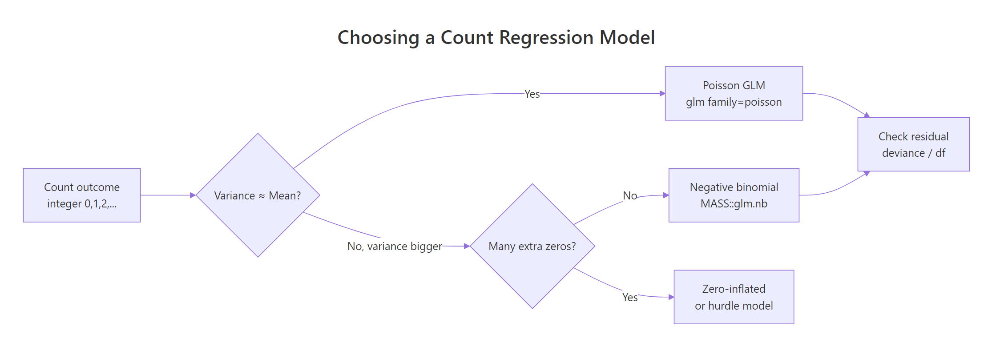
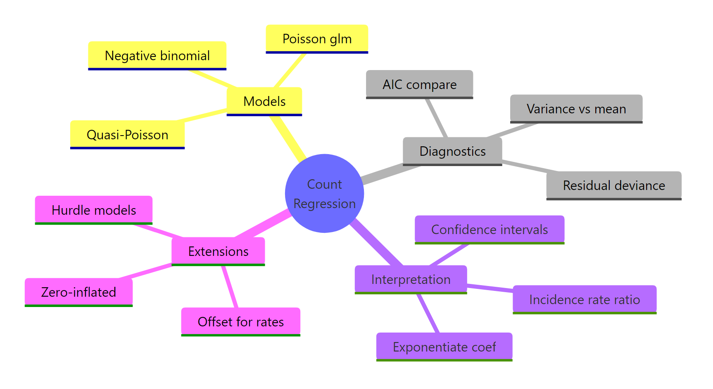

Poisson & Negative Binomial Regression: Model Count Data in R
Poisson and negative binomial regression are the two workhorse models for count outcomes in R, the kind of integer data you get when counting events (school absences, accidents, doctor visits). Use Poisson when the variance of the count is roughly equal to its mean, and negative binomial when the variance is bigger, which is what real-world data almost always look like.
Why can't you use linear regression for count data?
Counts behave differently from continuous outcomes. They are non-negative integers, often clumped near zero with a long right tail, and their spread tends to grow with their average. Linear regression happily predicts negative values, assumes constant variance, and treats residuals as Normal, all of which are wrong here. The fix is a generalized linear model with a log link and a count-friendly distribution. Let's fit one in two lines on the quine school-attendance dataset and unpack what it says.
That's a working count model. Each row is an Australian schoolchild, Days is the count of days absent in a year, and predictors are ethnicity, sex, age band, and learner status. The coefficients are on the log-count scale, so a positive number means more absences. LrnSL = 0.34 says slow learners have a higher log-count of absences than the baseline group, with the size of that bump waiting in the next section. Notice the dispersion parameter is forced to 1 (Poisson assumes that), which we'll come back to.
The math behind the fit is simple. Poisson regression links the expected count to a linear combination of predictors through a logarithm:
$$\log(\mu_i) = \beta_0 + \beta_1 x_{1i} + \beta_2 x_{2i} + \dots + \beta_p x_{pi}$$
Where:
- $\mu_i$ is the expected count for observation $i$
- $\beta_0$ is the intercept (log of the baseline rate)
- $\beta_j$ is the effect of predictor $j$ on the log of the expected count
- $x_{ji}$ is the value of predictor $j$ for observation $i$
The log link guarantees predicted counts stay positive no matter what the linear combination evaluates to.
Try it: Refit the model dropping the Lrn predictor and read the residual deviance. A smaller residual deviance means the dropped term wasn't carrying weight. Save your fit to ex_fit_simple.
Click to reveal solution
The deviance grew from 1696.7 to about 1739 once Lrn was dropped, so the learner-status flag was indeed explaining real variation in absences.
How do you interpret Poisson regression coefficients?
Raw Poisson coefficients are awkward because they live on the log scale. Exponentiating turns them into incidence rate ratios (IRRs): multiplicative factors on the expected count. An IRR of 1 means no effect; 1.5 means 50% more events; 0.7 means 30% fewer.
Now the numbers tell a clear story. Non-Aboriginal students (EthN) miss 41% fewer days than the Aboriginal baseline (IRR 0.59). Boys miss 17% more days than girls. Slow learners (LrnSL) miss 41% more days than average learners, with a 95% confidence interval of 27% to 56%. The intercept of 15.1 is the predicted baseline count for a girl from the reference age and learner groups.
confint.default() for fast Wald intervals, confint() for accurate profile intervals. Wald uses the SE and a Normal approximation, which is instant. The profile method searches the likelihood directly and is more reliable for small samples or extreme effects, but it's slower. Default to Wald during exploration, switch to profile when you finalize numbers for a report.Try it: Compute the IRR and 95% CI just for the SexM coefficient and write a one-sentence interpretation. Save the IRR to ex_irr_sex.
Click to reveal solution
Interpretation: holding ethnicity, age, and learner status constant, boys are absent about 18% more days than girls, and we're fairly confident the true effect is between 8% and 28%.
How do you check for overdispersion?
Poisson regression rests on a strong assumption: the variance of the count equals its mean. When that fails (and it usually does for real data), the coefficients themselves stay roughly correct, but the standard errors shrink, p-values look smaller than they should, and confidence intervals are too narrow. The model becomes overconfident. Spotting that is the single most important check after fitting a Poisson model.
The quickest sanity check is to compare the variance and mean of the raw outcome:
The variance is sixteen times the mean. If Poisson were the right distribution, those two numbers should be close. The histogram would also look bell-shaped around the mean for a Poisson; here it has a long right tail and zero spike, which screams overdispersion.
A more rigorous check uses the residual deviance from the fitted model. Under a true Poisson, the ratio of residual deviance to residual degrees of freedom should be near 1. Larger means overdispersion.
A ratio of 12 is dramatic. Anything above 1.5 already warrants attention; values above 2 mean Poisson p-values are not trustworthy. The model is fitting the means but underestimating the spread, which means every confidence interval and p-value in the previous section is artificially tight.
AER::dispersiontest(). It runs a Pearson chi-square style test against equidispersion. The AER package isn't pre-built for browser R, so this tutorial uses the deviance-over-df ratio, which agrees with the formal test in practice. If you want the p-value for a paper, install AER locally and run AER::dispersiontest(quine_pois).Try it: Fit a Poisson regression of gear (a count) on mpg from mtcars, then compute its dispersion ratio. Save the ratio to ex_disp_ratio.
Click to reveal solution
A ratio far below 1 means under-dispersion: the counts are tighter than Poisson expects (there are only three gear values in mtcars, so the variance is tiny). Under-dispersion is rare in practice and usually signals that Poisson isn't the natural model for the data.
When should you use negative binomial regression?
The negative binomial (NB) model fixes overdispersion by adding a single extra parameter, traditionally written as $\theta$ (theta) or $k$. Where Poisson forces variance to equal mean, NB lets variance grow as a quadratic of the mean:
$$\text{Var}(Y) = \mu + \frac{\mu^2}{\theta}$$
Where:
- $\mu$ is the expected count
- $\theta$ is the dispersion parameter (estimated from the data)
- Smaller $\theta$ = more overdispersion; as $\theta \to \infty$, NB reduces to Poisson
In R, MASS::glm.nb() is a near drop-in replacement for glm(family = poisson):
Compare those standard errors to the Poisson fit. The point estimates barely moved, but the SEs roughly tripled. Effects that looked rock-solid under Poisson, like SexM and AgeF3, now have honest p-values that no longer scream significance. That's the cost of the missing dispersion in the Poisson model showing up where it should: in the uncertainty.
The estimated Theta of 1.27 is small, confirming heavy overdispersion (a Theta of 100+ would mean Poisson was fine). The Std. Err. of 0.16 is the uncertainty around theta itself. Smaller theta means each predicted mean carries a wider distribution of actual outcomes.
family = quasipoisson in glm()). It's quick but it's a quasi-likelihood, so you can't compare quasi-Poisson with anything via AIC. NB is a real likelihood model: it gives you AIC, predicted distributions, and deviance you can trust.Try it: Fit an NB model with only Age as a predictor and inspect the new theta. Save the fit to ex_nb_age.
Click to reveal solution
Theta dropped from 1.27 to 1.10 because removing predictors leaves more unexplained spread, which the dispersion parameter has to absorb. You always want the smallest model that gives you a usable theta and acceptable AIC.
How do you model rates with an offset term?
Counts almost always sit on top of an exposure. Insurance claims accumulate per policy-year, accidents per million miles driven, ER visits per person-day. A raw count of 5 is meaningful only relative to its denominator. The standard fix is an offset term: a known coefficient of 1 on the log of the exposure, which lets the rest of the coefficients describe the rate, not the count.
Let's simulate a small insurance dataset and fit a rate model.
Each row is a policy with a region label, a length of coverage, and the observed number of claims during that coverage. Rural policies tend to have lower claim rates, but they also tend to have different exposures, so a raw claims ~ region Poisson would conflate the two. The offset separates them.
Exponentiating, urban policies have $e^{0.811} \approx 2.25$ times the claim rate of rural policies, which matches the simulation (0.30 vs 0.15 = a 2× rate ratio, well within the CI). Without the offset, the coefficient on regionurban would mix true rate differences with whatever exposure imbalance existed in the sample.
offset(log(exposure_years)) is correct; offset(exposure_years) is silently wrong. The offset has to be on the same scale as the linear predictor, and the linear predictor is the log of the expected count.Try it: Refit the model without the offset and compare the regionurban coefficient to the version with offset. Save the no-offset fit to ex_offset_fit.
Click to reveal solution
Without the offset, the urban coefficient drops from 0.811 to 0.500. The model is now describing total counts rather than rates, and any imbalance in exposure between rural and urban policies leaks into the region effect. With offset, you get the cleaner rate ratio.
How do you compare and diagnose count models?
Once you've fit Poisson and NB on the same data, the practical question is which one to trust. The comparison itself is easy because they're both real likelihood models: AIC works directly. Diagnostics matter too: a smaller AIC on a poorly-fitting model is no win.

Figure 1: Decision flow for choosing a count regression model.
The flowchart captures the whole game. Start with Poisson, check dispersion, escalate to NB if needed, and consider zero-inflated extensions only if you have a true excess of zeros beyond what NB can explain.
NB beats Poisson by 1190 AIC points. That's not a marginal call; that's an avalanche. AIC differences above 10 are usually decisive, and we're an order of magnitude past that. The extra parameter (theta) is paid back many times over by the gain in fit.
A second diagnostic is plotting predicted counts against observed counts. If the model is well-calibrated, the points should hug the diagonal:
The cloud sits around the diagonal, meaning the NB model is calibrated on average. The vertical scatter is large because individual student absences are noisy, but that noise is what theta is there to absorb. For a more diagnostic view, plot(quine_nb, which = 1) shows residuals vs fitted values; you want no funneling pattern.
Try it: Fit Poisson and NB on the simulated insurance_df (with the offset) and compare AIC. Save the AIC table to ex_aic_compare.
Click to reveal solution
The AICs are almost identical, with NB slightly worse because it pays for an extra parameter that buys nothing on this clean simulated Poisson data. When that happens, stay with Poisson: simpler, just as good.
Practice Exercises
These combine multiple concepts from the tutorial. Work through them in order; difficulty grows.
Exercise 1: IRR with confidence interval for an age effect
From quine_nb (the NB model fit earlier), compute the IRR for AgeF3 with its 95% Wald confidence interval. Save the IRR (a single number) to my_irr_age.
Click to reveal solution
Compared to the Poisson IRR for AgeF3 (1.53 with a tight CI), the NB IRR is 1.43 with a much wider CI that crosses 1. Once dispersion is accounted for, the age-3 effect is no longer statistically distinguishable from no effect.
Exercise 2: Simulate overdispersed counts and pick the winning model
Simulate 300 counts where lambda = exp(0.5 + 0.4 * x) with x ~ N(0, 1), but add NB noise with size = 2 (use rnegbin() from MASS). Fit both Poisson and NB, compare via AIC, and save the model with the lower AIC to my_winner.
Click to reveal solution
NB wins by 200+ AIC points, exactly as expected because we added genuine overdispersion to the simulation. The takeaway: when the true data-generating process has extra noise beyond Poisson, AIC reliably finds it.
Exercise 3: Rate ratio from an offset model with a continuous predictor
Extend insurance_df with a policy_age column (random integers 1–10), and rebuild the outcome so that the true claim rate also rises with policy age (multiplier exp(0.1 * policy_age)). Fit a Poisson with offset and report the rate ratio for policy_age. Save to my_rate_ratio.
Click to reveal solution
The fitted rate ratio of about 1.09 per year of policy age is close to the true 1.105 (sampling noise accounts for the gap). Each additional policy year multiplies the expected claim rate by ~1.09, holding region and exposure constant.
Complete Example
Here's the whole workflow on quine, from raw data to interpreted results, in one continuous flow.
The NB model gives honest standard errors, sensible IRRs, and a ready prediction for any new student. Ethnicity is the single biggest driver, and once dispersion is accounted for the marginal effects of sex and age weaken substantially compared to the naive Poisson fit.
Summary

Figure 2: Overview of count regression concepts.
The decision tree for count data is short and reliable.
| Question | Answer |
|---|---|
| Outcome is a non-negative integer count? | Start with Poisson via glm(family = poisson) |
| Variance ≫ mean (or deviance/df ≫ 1)? | Switch to NB via MASS::glm.nb() |
| Counts are per unit time/area/exposure? | Add offset(log(exposure)) to keep coefficients on the rate scale |
| Want effect sizes that read like multipliers? | exp(coef(fit)) gives incidence rate ratios |
| Choosing between two count models? | Compare AIC (Poisson vs NB are directly comparable) |
Skip Quasi-Poisson unless you specifically need Poisson coefficients with sandwich SEs. NB does the same job better and gives you AIC.
References
- Venables, W. N. & Ripley, B. D. Modern Applied Statistics with S, 4th Edition. Springer (2002). Origin of
glm.nb()in the MASS package. Link - Faraway, J. Extending the Linear Model with R, 2nd Edition. CRC Press (2016). Chapter on count regression.
- Cameron, A. C. & Trivedi, P. K. Regression Analysis of Count Data, 2nd Edition. Cambridge University Press (2013). The standard reference. Link
- UCLA OARC. Negative Binomial Regression: R Data Analysis Examples. Link
- R Core Team.
glm()documentation, stats package. Link - CRAN. MASS package reference manual. Link
- Hilbe, J. M. Negative Binomial Regression, 2nd Edition. Cambridge University Press (2011). Deep dive on NB variants and diagnostics.
Continue Learning
- Logistic Regression in R, when the outcome is binary instead of a count, logistic is the parallel GLM workhorse.
- Zero-Inflated Models in R, for counts with more zeros than even NB can explain (e.g., counts of doctor visits where many people simply don't see a doctor).
- Which Regression Model in R, a broader decision guide that places Poisson and NB alongside linear, logistic, and ordinal regression.